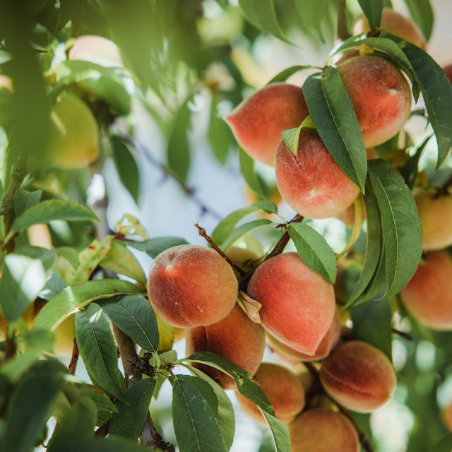
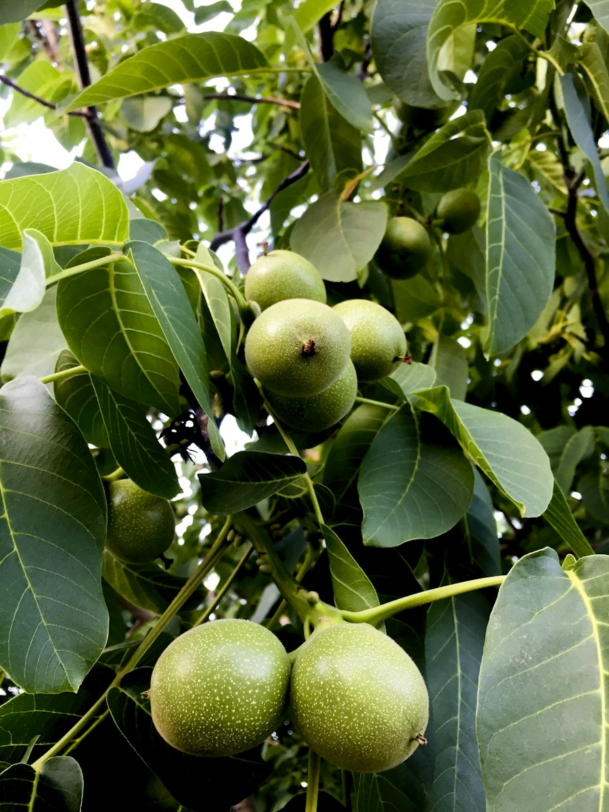
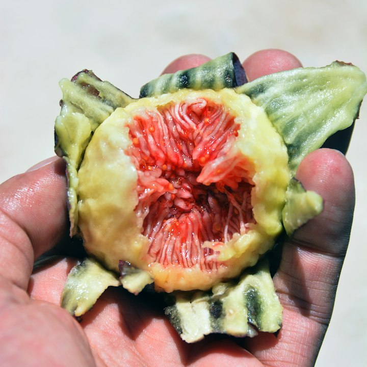
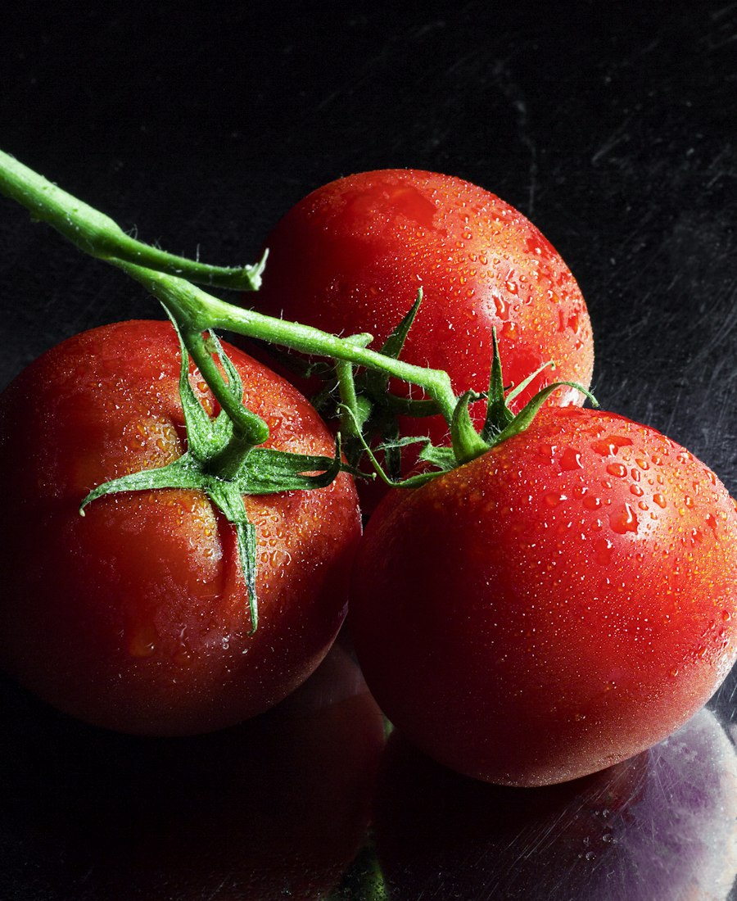
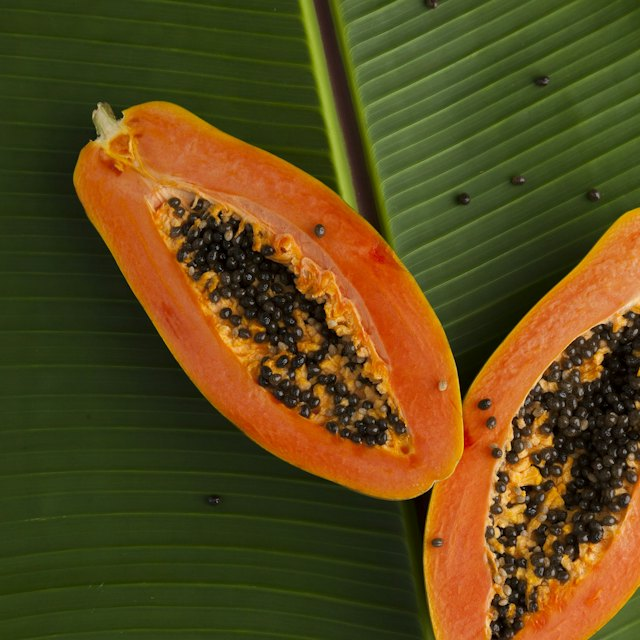
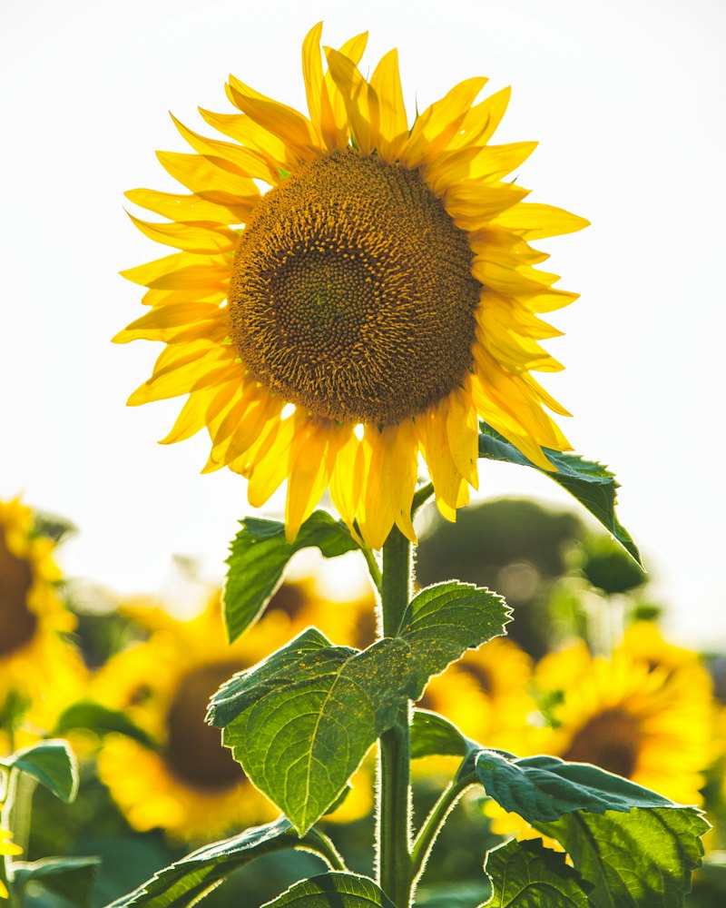

Manteca
The book for the whole row.
So the person in the row can look after it. Water is written for this heat, fruit stays until it can sweeten, and a question still gets an answer.
Sierra Hacks 2026

The row
A day early stains a walnut and wastes a peach.
A hot week drops the flowers.
Someone still has to know the water, the soil, and the bug.
What Surco does
Look it up
Search the orchard, the garden, the stand, and the field.
Hold it up
Pick, wait, flag — or ask, and do not guess.
Ask Yema
Heat, water, soil, a bug, or a question the card never stored.

The book
251
plants you can search in one place. Each card has a photo, a harvest call, and a watering line written for this heat.



When you hold it up
MobileNet v2, width 0.5, in the browser. The call is stored with the photo. Nothing is written when you take the picture.
Yema
Water. Heat. Soil. A bug. When to pick.
The page opens in 21 languages. The harvest lines are written in English and Spanish.
What can I plant in this heat?
How much water this week?
My leaves are curling
Purpose
Impact
Water is written for this heat.
Fruit stays until it can sweeten.
Heat, soil, and a bug still get an answer.